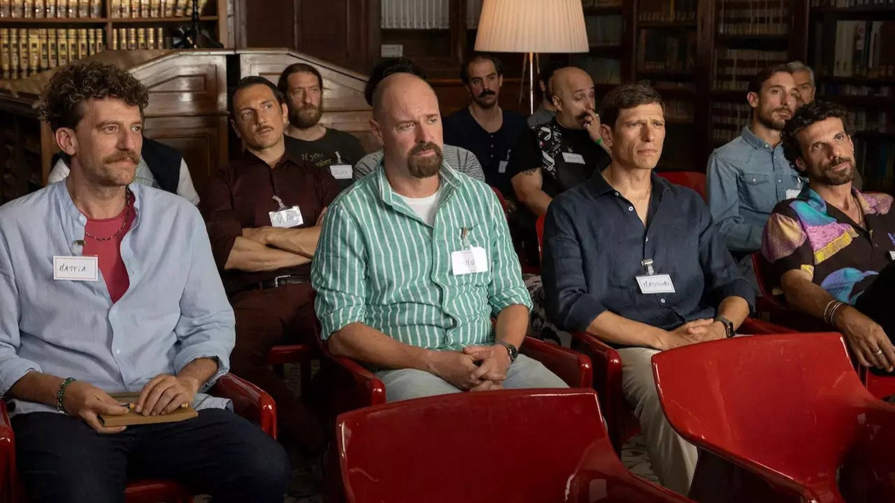

Novità in streaming nel weekend: 9-11 ottobre 2026
Da Carrie di Mike Flanagan a Below su Netflix, fino agli 883 su NOW: cinque titoli per il fine settimana, con il nostro giudizio d'attesa
Un weekend che pesca a piene mani dalla paura e dalla nostalgia: il ritorno di Stephen King in versione Mike Flanagan, una creatura che esce dal mare di Terranova e, per chi preferisce ridere o canticchiare, quattro amici di Maschi veri e la seconda stagione degli 883. Abbiamo scelto cinque titoli, ciascuno con data, piattaforma, cast e un giudizio d'attesa, cioè quanto ci incuriosisce prima di aver visto tutte le puntate. Dove esistono recensioni già uscite, le citiamo con testata e autore.
Una precisazione sulle date: sono quelle italiane. Alcuni database internazionali indicano il giorno americano, che a volte differisce di ventiquattro ore.
Carrie (Prime Video, dal 7 ottobre)
È il titolo più atteso del fine settimana, e si può finire in due serate: tutti gli otto episodi sono online insieme dal 7 ottobre. La miniserie è creata da Mike Flanagan e rilegge il romanzo di Stephen King: dopo la morte improvvisa del padre, Carrie White, ragazza isolata e cresciuta da una madre iperprotettiva, entra in un liceo pubblico, subisce un episodio di bullismo e scopre i suoi poteri telecinetici. Nel ruolo di Carrie c'è Summer H. Howell, accanto a Samantha Sloyan, Siena Agudong, Josie Totah, Amber Midthunder e Matthew Lillard.
Il racconto, a differenza di quello degli anni Settanta, usa i social: secondo Sorrisi e Canzoni TV, le umiliazioni diventano virali prima ancora della resa dei conti. Le prime reazioni della critica internazionale sono buone: secondo Wikipedia, il 10 ottobre 2026 Rotten Tomatoes riporta l'85% di giudizi positivi su 110 recensioni e Metacritic 72 su 100 su 33 recensioni. Judy Berman su Time l'ha definita la prima adattazione degna del romanzo da cinquant'anni a questa parte, mentre Nate Richard su Collider la descrive come una versione nuova, imperfetta ma molto avvincente, più vicina a un «remix» che a un rifacimento (traduzione nostra).
Il nostro giudizio d'attesa è alto. Flanagan ha costruito la sua reputazione sulle miniserie horror con forti personaggi, e Carrie è un materiale perfetto per questa idea: il mostro è soprattutto una ragazza che nessuno protegge. Il rischio è il confronto con un film che tutti conoscono, quindi chi cerca solo il brivido rischia di restare freddo davanti a una storia più dolente che spaventosa. Questo è un nostro parere, non una recensione: non abbiamo ancora visto tutta la serie.
Below (Netflix, dal 8 ottobre)
Per chi vuole un horror a tema marino, Below ha tutto quello che serve: una cittadina isolata di Terranova, in Canada, terrorizzata da una creatura che arriva dal mare. La miniserie ha sei episodi ed è creata da Jesse McKeown. A guidare il cast è Josh Hartnett, affiancato da Charlie Heaton, Natasha Henstridge e Mackenzie Davis.
Il giudizio d'attesa è curioso ma con la riserva di chi conosce il genere: i mostri marini funzionano quando il mare sa di vero e i personaggi di una comunità piccola si conoscono da sempre. Sei puntate sono un formato ideale per tenere teso il ritmo, ed è il titolo che consigliamo a chi ha già divorato Carrie e vuole restare nel buio.
Maschi veri 2 (Netflix, dal 7 ottobre)

La commedia italiana di Netflix riporta in scena Pietro Sermonti, Francesco Montanari, Maurizio Lastrico e Matteo Martari: quattro amici che si credono guariti dalla mascolinità tossica, mentre la loro vita sentimentale va a pezzi. Secondo Sky TG24, tra le new entry ci sono Silvia D'Amico, Alessio Boni, Carolina Crescentini e Ilenia Pastorelli.
Qui esiste già una recensione, ed è tiepida: su Cinefilos Chiara Guida le dà 2,5 stelle su 5, riconosce che l'amicizia dei quattro protagonisti resta il cuore del racconto, ma scrive che la scrittura ha meno mordente rispetto alla prima stagione e che i percorsi femminili si concentrano troppo su gravidanza, maternità e adozione. Il nostro giudizio d'attesa si adegua: è una visione leggera, adatta a chi ha amato i personaggi, meno a chi cerca la sorpresa della prima stagione.
Nord Sud Ovest Est – La leggendaria storia degli 883 (NOW, dal 9 ottobre)
Per Sky e NOW il venerdì è il giorno degli 883: la seconda stagione della serie sulla band di Max Pezzali e Mauro Repetto debutta il 9 ottobre con otto episodi, a cadenza settimanale ogni venerdì. Dopo la prima stagione, intitolata Hanno ucciso l'Uomo Ragno, il racconto riparte dal 1993, quando i due arrivano in cima alle classifiche e scoprono che il successo cambia la vita e il loro rapporto, tra concerti, nuovi amori e un viaggio in America. Elia Nuzzolo e Matteo Oscar Giuggioli interpretano Max e Mauro. Alla regia ci sono Sydney Sibilia, Alessio Lauria, Simone Godano e Alice Filippi.
Il nostro giudizio d'attesa è di curiosità affettuosa. Raccontare un solo anno, il 1993, è una scelta intelligente: permette di guardare da vicino la crepa tra i due amici invece di riassumere una carriera. Il rischio è quello di ogni biopic musicale, cioè fare un elenco di canzoni invece di una storia. Dall'uscita settimanale, inoltre, si capisce che è una serie da seguire con calma.
E poi, se avanza tempo
Sempre il 9 ottobre su Netflix arrivano la seconda stagione dell'animazione per adulti Haunted Hotel – L'hotel infestato e il K-drama Doctor X: Mafia in White, mentre su HBO Max prosegue ogni venerdì Peccato, la commedia italiana costruita sul «fantastico tracollo» di Emanuela Fanelli, come la presenta ComingSoon.
Cosa vedere per primo?
Se avete una sola serata, scegliete Carrie, che ha il cast più forte e le prime recensioni migliori. Se volete restare in tema ottobre ma con un mostro vero, Below è la scelta più diretta. Per una serata senza pensieri c'è Maschi veri 2, a patto di non aspettarsi lo scatto della prima stagione. E se siete cresciuti con gli 883, la serie di NOW è un appuntamento fisso del venerdì.
Cinque novità per tre giorni di divano: Carrie è la nostra scelta numero uno, Below la più adatta a Halloween, gli 883 l'appuntamento del venerdì. E voi, da quale cominciate?
Domande frequenti
Quanti episodi ha Carrie su Prime Video?
La miniserie di Mike Flanagan ha otto episodi, disponibili tutti insieme dal 7 ottobre 2026.
Quando esce Below su Netflix?
La miniserie, di sei episodi, è disponibile dall'8 ottobre 2026.
Dove vedere la seconda stagione degli 883?
Su Sky e in streaming su NOW dal 9 ottobre 2026, con otto episodi a cadenza settimanale.
Fonti consultate (9)
- Wikipedia – Carrie (miniserie 2026)
- Sky TG24 – 20 serie tv da vedere a ottobre
- ComingSoon – Cosa vedere in streaming a ottobre 2026
- Sorrisi – Da Maschi veri a Carrie, i nuovi film e serie tv della settimana
- Sorrisi – Nord Sud Ovest Est, la seconda stagione della storia degli 883
- Cinefilos – Maschi veri 2, recensione di Chiara Guida
- TMDB – Below
- TMDB – Hanno ucciso l'Uomo Ragno (prima stagione della serie sugli 883)
- TMDB – Carrie